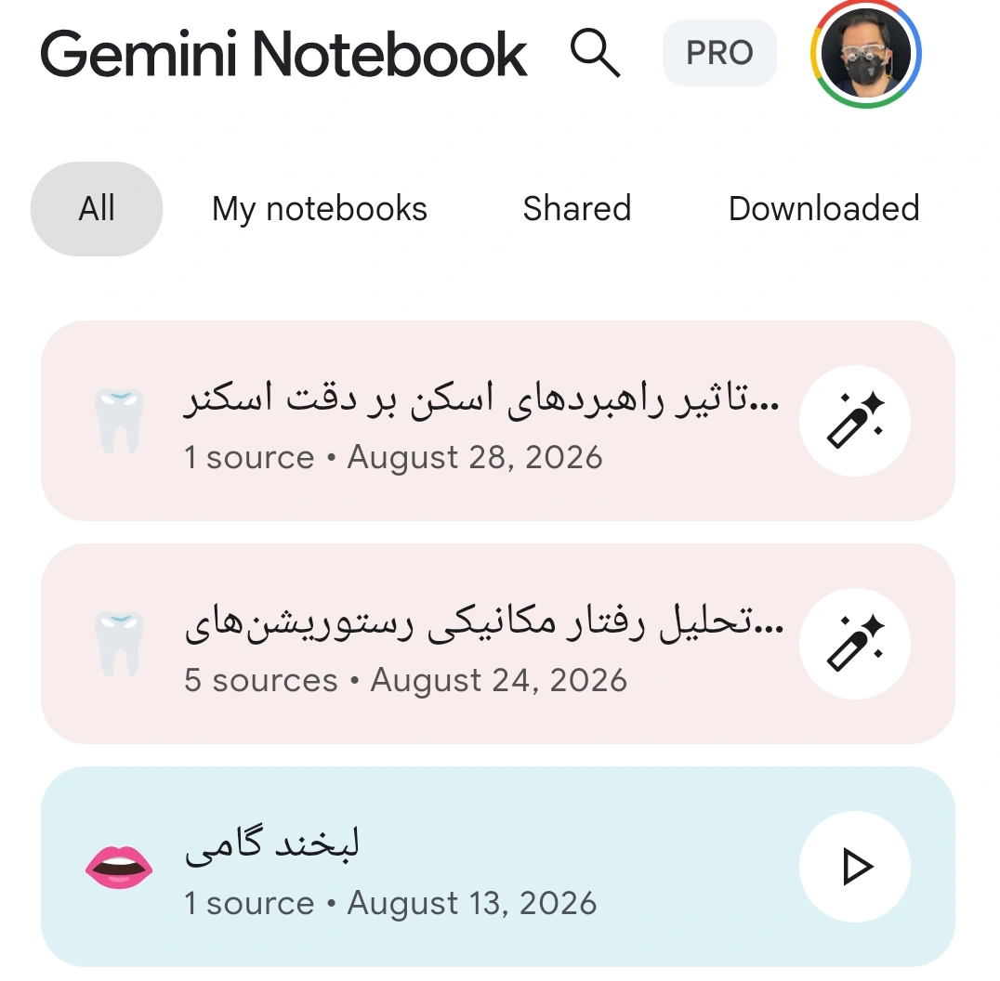
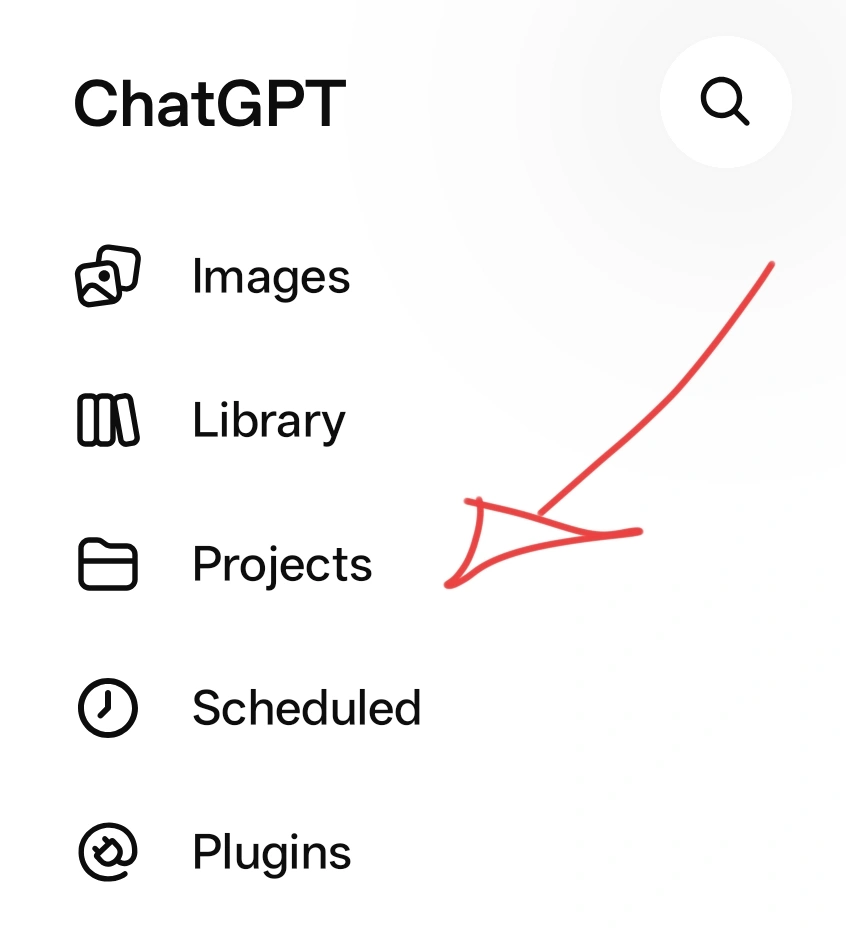
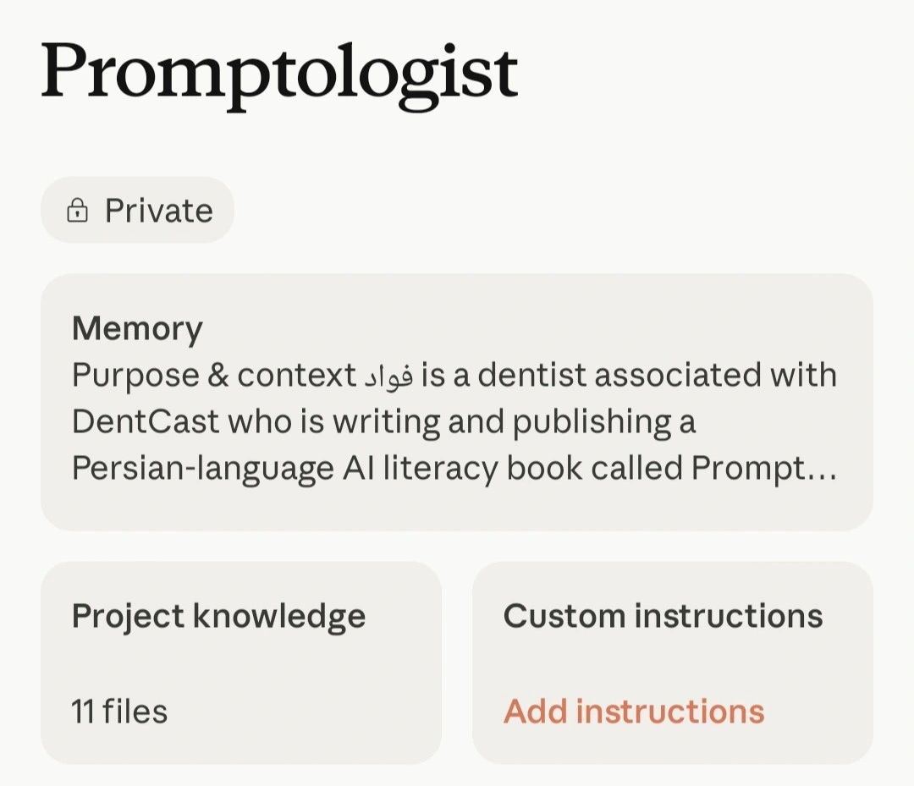
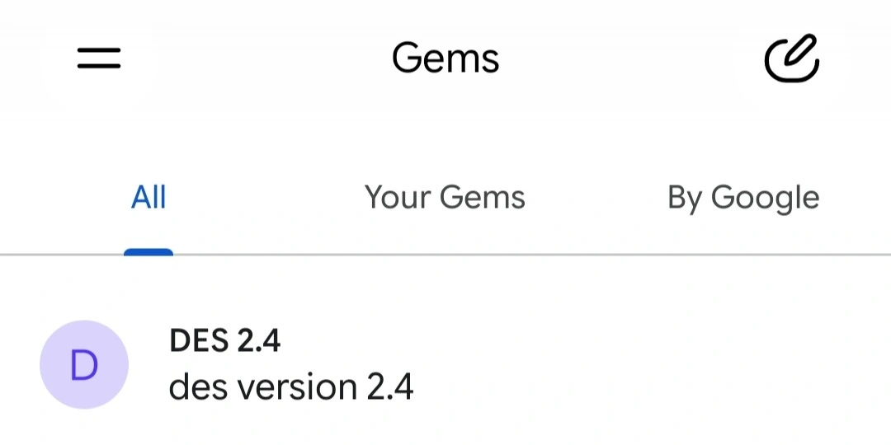

Your Own Workspace
This Part
The last part ended on this line: a general model has its own world of information, and your sources aren’t in it. The question now is how to bring them in.
You probably already know the simplest answer, and you’ve done it many times: you upload the file into that same conversation, or you copy the text and paste it in. This works, and for a lot of tasks it’s enough. But it has two problems. First, once that conversation closes, everything is gone, and next time, in a new conversation, you have to do the same thing all over again. Second, the more you paste in, the sooner you hit the very ceiling we talked about in the last part, and past a certain point the model is answering from something it can no longer fully see.
For serious work you need something that helps your sources stay put — a place where you drop your sources once and they’re present in every conversation after that. Two kinds of such spaces are available today, and because they look alike they’re often mistaken for one another, even though they do two different jobs.
First, You Need to Know What Happens Behind the Scenes
Say you’ve handed over twenty papers on peri-implantitis treatment and you ask what those papers say about mechanical debridement.
What actually happens is not that the model reads all twenty papers and then answers. The system first searches those twenty papers for passages relevant to your question, pulls out a handful of them, and places those passages in front of the model together with your question. The model then writes its answer from those passages alone. This method is called RAG, short for Retrieval-Augmented Generation — generation assisted by retrieval, which is exactly what the name says. Learn this term and its examples; you’ll hear it a lot in AI-related sources.
In Chapters 1 and 2 we said this blocks fabrication but not misunderstanding. Now that you’ve seen the mechanism, a third point gets added that matters more than either of those and that fewer people notice: the model only ever sees the passages the system managed to find for it. If the search doesn’t pick up the right passage, the model has no idea it exists. It answers in the same confident tone from whatever passages it does have, and you get back an answer that is precisely documented against your own sources yet still misses the main point of those twenty papers.
In other words: giving the model sources solves the “making it up” problem, not the “did it see everything” problem. Hold on to that, because the next part is entirely about it.
But as I said, two kinds of these spaces are available — let’s go through them together:
The First Kind: NotebookLM and Its Relatives
NotebookLM, whose name we set aside from Chapter 1, is a Google service built to do exactly this. You create a notebook, drop your sources into it — PDFs, links, text, even an audio file — and then you only ask questions about those.

Its main difference from an ordinary chat is that it’s strict. It never strays outside your sources, and if you ask something that isn’t in them, it will usually say so rather than jumping over to its general knowledge. Every sentence it writes is also tied to a specific passage in a source, and one click shows you exactly where.
That last feature is the most useful thing here for you — for exactly the reason we gave in Chapter 5: you cannot judge whether “this statement is true,” but you can very easily check whether “this sentence exists in that paper.” NotebookLM makes the second one easy. The first one is still your job.
Where it’s genuinely useful: when you’ve gathered a set of papers on one specific topic and want to search across them. Say, ten papers on immediate implant survival in the esthetic zone, and your question is which of them had a follow-up of more than five years, or which ones defined success by different criteria. You could do this by hand too, and it would take a few hours.
Where it isn’t useful: when you want to write something that isn’t in your sources, or when you want the model to help you with its general knowledge. For that, you need a different place.
The Second Kind: Your Own Fixed Space
Here the names differ between services, and that’s exactly what causes the confusion. Claude and ChatGPT both have something called a Project. Gemini doesn’t have a Project; instead it has a Gem. ChatGPT, separately from Projects, also has custom GPTs. The names differ, but the idea is one and the same: a space that holds your fixed things so you don’t have to say them again every time.

There are two things you can keep fixed.
The first is a fixed prompt — the very thing we said, in the last part, that companies write behind their ready-made assistants, except this time you write it yourself and you see exactly what you wrote. For instance: I’m a general dentist, my texts are addressed to a patient, not a colleague; don’t use technical terms without explaining them; whenever you state a number, cite its source too.
You write this once, and you no longer need to repeat it at the start of every conversation. Whatever you learned in Chapter 4 and then found yourself repeating over and over — this is where it belongs.
The second is Knowledge — files that are always within the model’s reach. Your practice’s protocols, the text of your consent forms, your reference papers, notes you keep about your own writing style.

A Real Example From My Own Work
I’ve written a prompt that scores a paper’s credibility. Instead of asking the model whether this paper is good — the very bad question we talked about in Chapter 5 — I’ve defined the criteria inside the prompt itself, and the model’s job is to weigh the paper against those exact criteria and hand back a credibility number at the end.
The catch is that this prompt is long, and copying it every time isn’t convenient. DentCast’s own site code now uses it for scoring, but if I wanted to use it without any special tool, the way to do it would be to build a Project and make this prompt its fixed prompt; then every conversation started inside that Project would already know what it was there to do. I’ve actually built a Gem with this exact prompt myself (I explained above what a Gem is). Now I simply send a paper into that Gem, without repeating the prompt, say “score its credibility,” and the output comes back according to those exact criteria.

This also shows the practical difference between a Gem and a Project. A Gem is for one specific task you keep repeating; a Project is for a broader area of work where you do several different kinds of tasks and share a common set of resources.
So Which One, Where
The difference between these spaces and NotebookLM matters, and it isn’t a small one: these are softer. The model has your Knowledge, but it also has its general knowledge, and it draws on both freely, without always making clear which sentence came from which. That makes it excellent for writing and poor for verification.
So the rule for choosing is simple. If what you want to say is “speak only from these ten papers,” use NotebookLM. If what you want to say is “write in my usual framework and tone, and keep these files within reach too,” use a Project or a Gem.
There’s one practical catch you’d better know early: whatever you dump into Knowledge is not read in full the way you’d expect. The same retrieval process runs behind the scenes here too, and only passages come through. So Knowledge isn’t a place to stockpile files; it’s a place to put the things that genuinely serve as your reference material. Thirty disorganized files make your work worse, not better.
And One Small Thing That Will Help You a Lot: Markdown
Up to here we’ve kept talking about files. Now the question comes up of what file, in what format — learn this too, because you’ll hear about it a lot in AI-related sources:
Markdown is a very simple way to write structured text. It’s an ordinary text file with an .md extension, and inside it you give structure with a handful of small marks: a # at the start of a line means this is a heading, two asterisks around a word means this is bold, a dash at the start of a line means this is a list item. That’s the whole of what you need to learn, and it takes five minutes.
Why does it matter for our work? Because in Markdown, the structure lives inside the text itself, not in its appearance. In a Word file or a PDF, a heading is a heading because it’s printed bigger and bolder — and that bigness and boldness is something your eye sees, not necessarily something that reaches the model. In Markdown, a heading is a heading because a # sits in front of it, and that mark is part of the text itself and never gets lost. That’s why, when you hand a model text in Markdown, your document’s structure arrives intact.
It works the other way too: ask the model to give you its output in Markdown. The file is lightweight, opens in any text editor, will still open years from now, and — most important — you can drop that exact file straight into a Knowledge folder or a notebook. Meaning whatever you build today becomes, tomorrow, the source for your next piece of work.
And Then
Up to here, we’ve pulled the model out of its general world and set it down on your own sources. This is a real step forward, and it’s as far as most people ever go.
But go back to that point in the middle of this part: the model only ever saw the passages that were found for it, and whether it understood those passages correctly or not, you have no way of knowing. Every sentence being linked to a source proves the quote isn’t fabricated; it doesn’t prove the model’s reading of it is correct.
So we’re still missing one link. How do you find out whether what a model understood from your sources is correct, without having to read all twenty papers yourself from the start? The answer I found for myself, and have been using for a while now, is the subject of the next part.